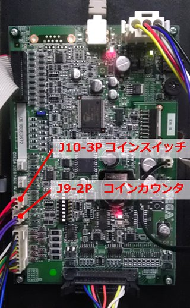
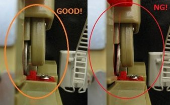

dl1cvt005_クレジットがあがらない
１．機械式コインセレクタ(例：DX,EX-F、DL2-CVT、DL1-CVT等)
・ コインセレクタの接続は正しくできていますか？
・ I/Oボードへの配線は間違っていませんか？
コインセレクタは J10の3ピンコネクタです。
詳しくは こちらをご覧ください。
写真：J10コネクタ位置
I/Oボード自体にも小さな文字で記載がありますのでご確認ください。

２．電子式コインセレクタ(例：EX)
・コインセレクタの接続は正しくできていますか？
・I/Oボードへの配線は間違っていませんか？
・ コインセレクタに挟んである参照用コインが外れたり、傾いたりしていませんか？
写真：参照用コインの設置模範

注意：電子式コインセレクタには感度調整ボリュームがあります。調整方法について、詳しくは こちらをご覧ください。
サポートマニュアルP.19「クレジットがあがらない(機械式コインセレクター)」
サポートマニュアルP.22「クレジットがあがらない(電子式コインセレクター)」
*サポートマニュアルはPDF対応環境のみ閲覧できます。
Last updated on December 7, 2018